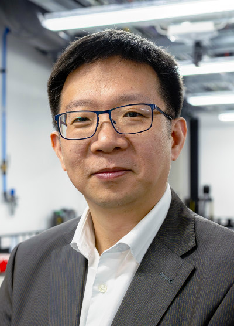

|  |
Charlie C. L. Wang, Fellow of ASME Professor and Chair of Smart Manufacturing Department of Mechanical, Aerospace and Civil Engineering Faculty of Science and Engineering The University of Manchester Address: Pariser Building, 76 Sackville Street, Manchester M1 3NJ, UK Email: changling.wang@manchester.ac.uk
|
Prof. Charlie C. L. Wang currently holds a Chair of Smart Manufacturing with the University of Manchester. Prior to this, he was a Chair of Advanced Manufacturing at Delft University of Technology and a Professor of Mechanical and Automation Engineering at the Chinese University of Hong Kong. He also worked as a visiting professor at University of Southern California during sabbatical leave. Prof. Wang received a few awards from professional societies including the ASME CIE Excellence in Research Award (2016), the ISSMO/Springer Prize (2019), the Best Paper Award (2nd Place) of Solid and Physical Modeling (2019), the NAMRI/SME Outstanding Paper Award (2013), the Best Paper Awards of ASME CIE Conferences (twice in 2008 and 2001 respectively), the Prakash Krishnaswami CAPPD Best Paper Award of ASME CIE Conference (2011), and the ASME CIE Young Engineer Award (2009). He received his B.Eng. degree (1998) in mechatronics engineering from Huazhong University of Science and Technology and his M.Phil (2000) and Ph.D. (2002) degrees in mechanical engineering from Hong Kong University of Science and Technology (HKUST). He was elected Fellow of American Society of Mechanical Engineers (ASME) in 2013.
Besides research, Prof. Wang also received a few teaching awards including the CUHK Vice-Chancellor's Exemplary Teaching Award in 2008. His philosophy is that a good teacher not only imparts knowledge but also inspires students to seek truth beyond tradition, definition and image.

Last Updated: 03/2021